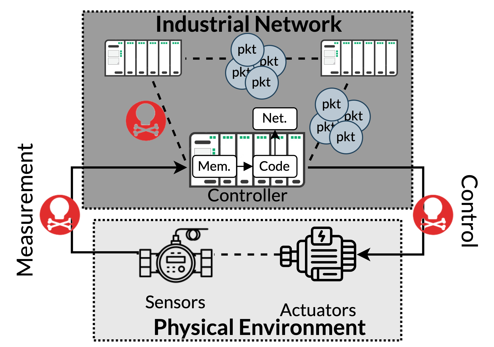

Research
My research investigates the security and resilience of critical national infrastructure and cyber-physical systems. I develop intelligent approaches to cyber threat detection, digital forensics, and attack investigation, combining artificial intelligence, data provenance, and system-level analysis to address emerging cybersecurity challenges.
Data Driven Detection, Provenance and Explainability for CNI
Operational Technology (OT) and Industrial Control Systems (ICS) underpin essential services across energy, manufacturing, transport, and other Critical National Infrastructure sectors. My research aims to develop novel approaches for multi-modal data fusion strategies to construct richer, more comprehensive behavioural profiles of ICS environments. These enriched profiles not only enable robust detection and explainabilty of deviations from normal operation, but also support deeper characterisation of anomalous behaviour, including how manipulated signals and measurements evolve over time, offering insight into the underlying nature and progression of attacks.

Recent Papers:
- Nahalka, Martin, Cook, Marco and Pezaros, Dimitrios, " Heterogeneous Graph Fusion for Multi-Modal Industrial Anomaly Detection ", IEEE International Conference on Cyber Security and Resilience (IEEE CSR), Lisbon, Portugal, 2026
- Cook, M.M., Pezaros, D. " Artefact Provenance Graphs for Anomaly Inference in Industrial Control Systems ". IFIP ICT Systems Security and Privacy Protection. SEC, 2025
- Cook, Marco M., Angelos K. Marnerides, and Dimitrios Pezaros. "PLCPrint: Fingerprinting memory attacks in programmable logic controllers." IEEE Transactions on Information Forensics and Security (2023)
Digital Forensics
Data provenance provides a means of understanding how information flows through complex systems and how individual events relate to one another. My research investigates provenance-based security monitoring, attack reconstruction, and digital forensics, using causal relationships between processes, network events, and industrial system artefacts to support the detection and investigation of cyber incidents.
Recent Papers:
- Paper on provenance-based intrusion detection for operational technology . Author names. Conference or journal, year.